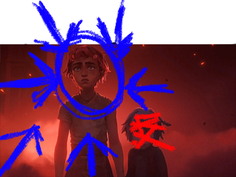
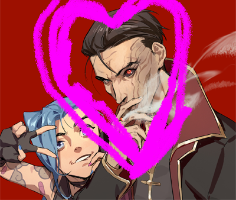
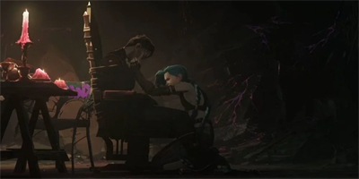
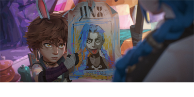
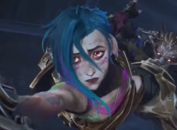

Backstory
“Ugh, you wanna dig into the past? Really? Fine, fine, let’s do this. But don’t blame me if it gets messy—things weren’t always fireworks and fun, y’know. Some stories start with sunshine and rainbows. Mine? Not so much.”
1.Once Upon a Powder

“Oh, you wanna hear about the ‘before times’? About the scared little mouse I used to be? Pfft, fine. But don’t get too comfy—this story goes KA-BOOM real quick.”
Once, there was this scrappy little runt called Powder. Spoiler alert: She’s me, but, like, WAY less fun.” Big dreams, tiny hands, and a habit of tinkering with gadgets that never quite worked. She thought she was oh-so-clever, running around Zaun with a pack of troublemakers, trying to be someone in a city that didn’t give a rat’s tail about her.
But here’s the kicker—Powder wasn’t a hero or a genius. She was a walking disaster. Every time she tried to help, she’d just make things worse. And worse. AND WORSE. Until one day… BAM! She didn’t just mess up—she blew her whole world to smithereens.
Oh, it was a real tear-fest. Boo-hoo this, sob-sob that. But guess what? Tears don’t glue the pieces back together. So I buried her. Powder? Gone. Poof. Sayonara. And then—ta-da!—Jinx was born. No more crying. No more fixing. Just glorious chaos, fun, and a whole lot of explosions. ”
2."The Sister Who Left"
“Oh, but wait! You're probably wondering—"Hey, wasn't there someone else? Someone important?"" Ugh, fine. Let's talk about her.”
There was this girl—big, strong, always acting like she knew everything. Vi. She called herself my sister, and for a while, I believed it. She was my everything. My protector, my hero, my whole world. She said we'd always stick together, that no matter what, she'd never leave me. Lies, huh?
See, back when I was still Powder, I thought Vi could fix anything. I'd mess up, and she'd swoop in to save the day. But the one time I needed her most, when everything fell apart, she didn't. She looked at me like… like I was a monster.
And then she was gone. Just like that. Left me alone in the rubble. And you know what I realized? Heroes are overrated. Sisters, too.
3."The One Who Saw Me"
“Oh, and then there’s Silco. The man who finally saw me for what I really was. You ready? Because this one’s a doozy…”
So, there I was, all alone in the wreckage of my life—no family, no gang, just me and my big ideas. And then… Silco showed up. Pfft, of course, he did. He was always watching, always scheming. At first, I thought he was just some other jerk trying to take advantage of me. But then, he did something different. He didn’t see me as a screw-up. He didn’t treat me like some fragile little thing that needed fixing. No, he saw my potential. He saw chaos—the real kind. The kind that makes the world burn, and he wanted it. He wanted me.
For the first time, someone didn’t see me as a mistake. He saw me as… useful.
So, I stuck around. I played his game. The plan? Let’s just say it was big. And loud. Just the way I like it. But every game has a price…

4."The Price of Power"
“You wanna know the truth? Fine, but don’t go thinking I’m proud of it.”
So, there I was, with Silco—he gave me everything. I thought we were building something. I thought he saw me. But I was wrong. He wasn’t building anything with me; I was just a tool to him.
Then came that night. That damn night. I didn’t mean to do it, okay? It just… happened. I pulled the trigger, and before I knew it, he was dead. I didn’t want to kill him. I didn’t plan it. But once it was done, all I could hear was the silence, and the blood.
And, yeah, maybe I felt bad. A little. But it didn’t change anything. Silco was gone, and I was alone again.
Guess I’m just cursed to blow things up, huh?
5."The One I Couldn’t Save"
This part isn’t fun. It’s a mess—like everything else in my life.”
So, after Silco, I thought things would be different. I had control. I had power. But I wasn’t alone anymore. Isha came into the picture someone who seemed to care about me. She wasn’t like the others. She actually listened to me.
We… we got close. Too close, I guess. I thought maybe, just maybe, I didn’t have to be the lone freak in this messed-up world anymore. But in the end, everything falls apart.
I don’t know what happened. One moment, we were talking, and the next? The explosion. It was chaos. I had to watch, helpless, as she… she was gone. I couldn’t save her. I tried. I swear, I tried. But nothing ever works the way it’s supposed to, does it?
I always lose the ones I care about.
6."The Endgame"
“So, you wanna know how it all ends? You think there’s a grand finale, a happy little bow to tie up the mess I made? Hah, nope. This is how it goes.”
You’d think I’d be ready for it by now, right? After everything—Silco, Isha, everything—you’d think I’d just get it over with. But, no. Life keeps throwing curveballs, and here I am, still playing the game.
I know how it’s going to end. I’ve seen it in my head a thousand times. Maybe I’ll get blown up, or maybe it’ll be another one of those moments where I pull the trigger and take someone down with me. Who knows?
But one thing’s for sure: when it happens, I’ll be laughing. Because that’s the only thing I’ve got left. I’ve lost everything. Family, friends, my mind—but I’m still here. The chaos never stops. And neither do I. I’ll die. But don’t cry for me. I won’t be sorry. The world’s just better when it’s a little bit on fire.
After all, what’s the point of dying if you don’t go out with a bang?